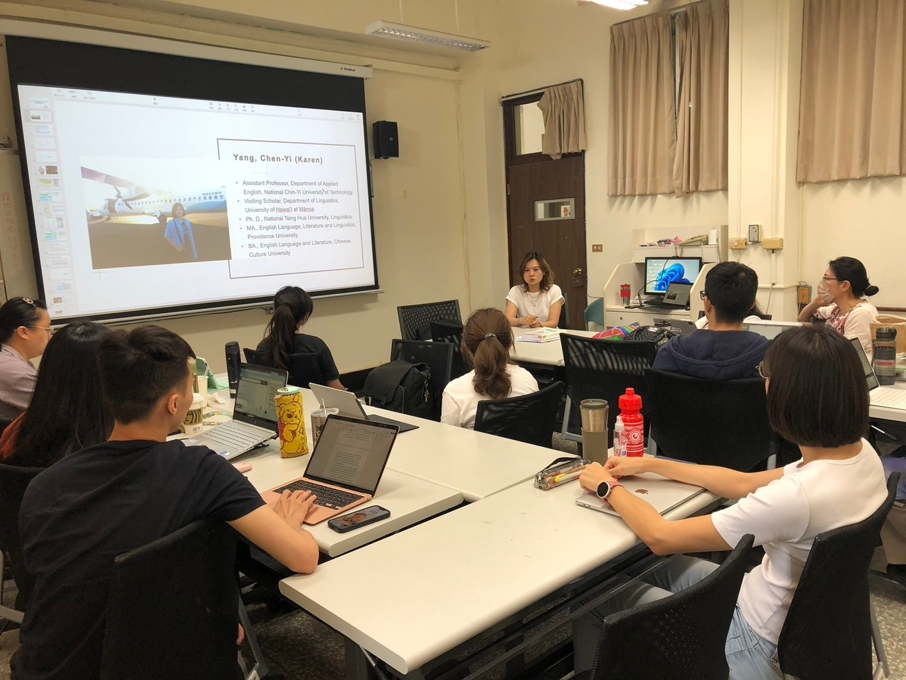
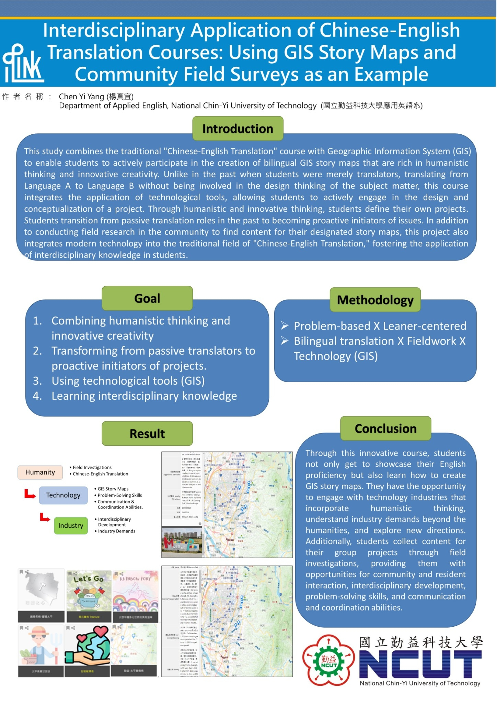

Project Details


研究計畫 Research Projects
計畫主持
- 114年度教育部「人文社會與產業實務創新鏈結計畫」第二期計畫【從教室到社區：中英翻譯與GIS故事地圖之跨域應用3.0】(2025-2027) | 教育部 (MOE-114-1-C-008)
- 113年度教育部教學實踐研究計畫【GIS故事地圖與中英翻譯課程之跨域應用】(2024-2025) | 教育部 (PED1137365)
- 112年度教育部「人文社會與產業實務創新鏈結計畫」第一期計畫【從教室到社區：中英翻譯與GIS故事地圖之跨域應用2.0】(2023-2025) | 教育部 (MOE-112-1-C-005)
- 112年度教育部「人文社會與產業實務創新鏈結計畫」第零期計畫【從教室到社區：中英翻譯與GIS故事地圖之跨域應用】(2023) | 教育部 (MOE-112-C-022)
計畫參與
- 科技部人文創新與社會實踐計畫【新竹智慧城鄉創生計畫：地方活力與能力建構】(2021) | 國立清華大學 (MOST 108-2420-H-007-010-HS1)
- 科技部人文創新與社會實踐計畫【灣岸創生：高雄過渡社區的記憶再現與創新轉型】(2018-2020) | 國立中山大學 (MOST 107-2420-H-110-004-HS1)
- Grammaticalization Cycles of Nasal Diminutive Suffixes in Chinese【鼻化小稱語法化輪迴】(2015) | 國科會 (NSC102-2410-H-007-023-MY2)
- 國科會補助博士生赴國外研究成果報告【台灣年輕人的語言能力、使用與認同之探究】(2014) | 國科會 (NSC102-2917-I-007-026)
- A Study of the Indigenous Language Teaching Situation in Elementary and Junior High Schools in Taiwan【臺灣地區國民中小學本土語言教學現況之整合型研究】(2011-2013) | 國家教育研究院 (NAER-100-11-A-1-01-00-2-01)
- Tsing-Hua Corpus and Study of Spoken Chinese: part II【清華語料庫與華語口語研究】(2009-2011) | 教育部 (99N2922E1)
- The Study of the Diachronic variation of Southern Min (Taiwanese)【台灣閩南語的歷時演變】(2009-2010) | 國科會 (NSC98-2923-H-007-001-MY3)
- Preservation of Endangered Language-Yami【瀕危雅美語之保存暨典藏、E-learning網站建構】(2006-2007) | 國科會、原民會 (NSC95-2411-H-126 -007) http://yamiproject.cs.pu.edu.tw/yami , http://yamiproject.cs.pu.edu.tw/elearn/?&lang=zhtw